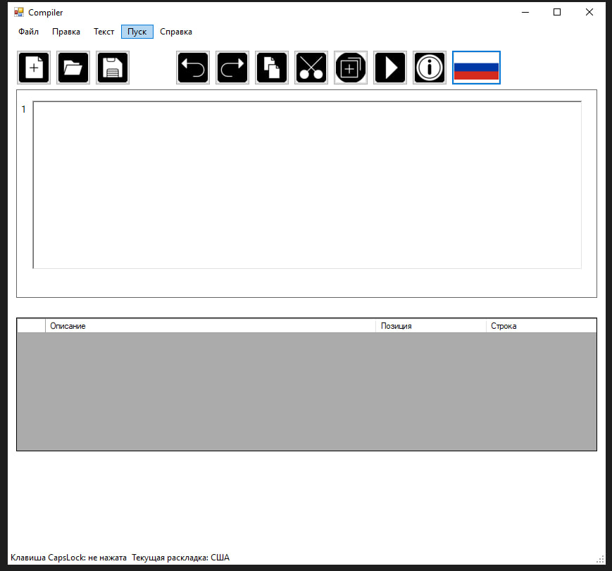

В пункте "Файл" меню текстового редактора реализован следующий функционал (см. рисунок А.1):
Создание документа
Открытие документа
Сохранение текущих изменений в документе
Сохранение документа в новый файл
Выход из текстового редактора
Рисунок А.1 – Пункт "Файл" меню
Пункт "Правка" меню текстового редактора
В пункте "Правка" меню текстового редактора находится функционал для правки введённого текста (см. рисунок А.2):
Отмена изменений
Повтор последнего изменения
Вырезать выделенный текстовый фрагмент
Копировать выделенный текстовый фрагмент
Вставить текстовый фрагмент
Удалить выделенный текстовый фрагмент
Выделить все содержимое документа
Рисунок А.2 – Пункт "Правка" меню
Пункт "Текст" меню текстового редактора
Пункт меню "Текст" содержит команды для вывода информации о курсовой работе и программы (см. рисунок А.3):
Постановка задачи
Грамматика
Классификация грамматики
Метод анализа
Диагностика и нейтрализация ошибок
Тестовый пример
Список литературы
Рисунок А.3 – Пункт "Текст" меню
Пункт "Пуск" меню текстового редактора
При нажатии на пункт "Пуск" происходит запуск парсера (см. рисунок А.4).

Рисунок А.4 – Пункт "Пуск" меню
Пункт "Справка" меню текстового редактора
Пункт меню "Справка" содержит подпункт "Вызов справки" - справочное описание программы и подпункт "О программе" - версия и информация о разработчике (см. рисунок А.5).
Рисунок А.5 – Пункт "Справка" меню
Панель инструментов текстового редактора
Панель инструментов содержит кнопки вызова часто используемых пунктов меню:
Создание документа
Открытие документа
Сохранение текущих изменений в документе
Отмена изменений
Повтор последнего изменения
Копировать выделенный текстовый фрагмент
Вырезать выделенный текстовый фрагмент
Вставить текстовый фрагмент
Запуск парсера
Справка
Смена языка
Информация о программе
Программа может работать с текстовыми файлами типа txt. Для этого у пользователя есть функции для работы с файлами:
Создать новый файл;
Открыть существующий файл;
Сохранить файл;
Сохранить как новый файл;
Выход - завершение работы программы.
Для работы с текстом для пользователя реализованы следующие функции:
Отменить предыдущее изменение;
Повторить изменение;
Вырезать выделенный текст в буфер обмена;
Копировать выделенный текст в буфер обмена;
Вставить текст из буфера обмена;
Удалить выделенный текст;
Выделить весь текст из области редактирования файла.
В область отображения результатов выводятся сообщения и результаты работы языкового процессора. Кнопка меню "Пуск" запускает парсер, который анализирует введённый текст, при этом выводятся все допущенные ошибки.